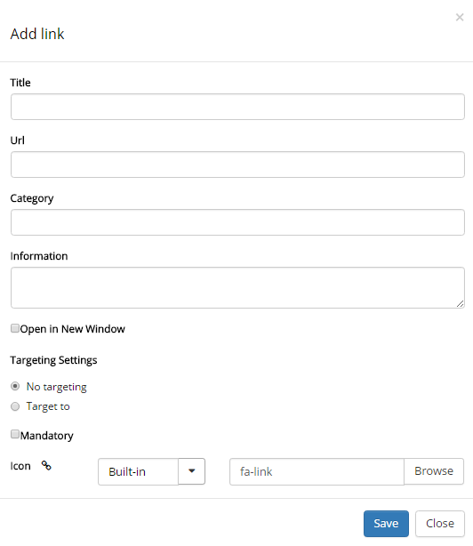
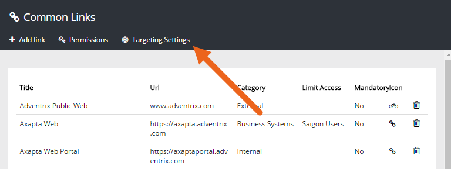
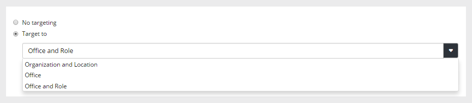
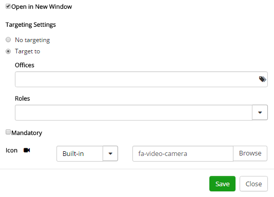

Common Links is a tenant scoped feature - the settings is used across all SharePoint sites in Omnia. It makes it possible to create a central list of links to resources that are commonly used within the organization.
Some links can be mandatory and it's also possible to target links to certain groups. Permissions to work with Common Links can be delegated to other colleagues.
The end user can access the common links in the My Links control.
The list constains all active links. You can edit a link or delete it from here.

To create a link, click "Add link" and the following window is shown. The same window is shown when you edit a link.
Title The title is shown as the clickable text, in My links.
Url The link to go to when the user clicks the link.
Category Links that are the same category will automatically be sorted together when the user chooses to display the categories.
Information This field can be used for additional information about the link. If you enter something here, an information icon is shown next to the link, in My links. Users can click the icon to read the information. Not mandatory.
Open in New Window Select to open in a new browser window. Normally a good idea for external links.
Mandatory If selected, the link is always shown for all users (or the limited set of users), and can not be deselected.
Icon An icon is always shown for a link. If you would like another icon for this link, select the "Build in" icon set or "Custom", and the choose icon.
A link can be targeted to any receivers that has been defined in the Target Definition selected for Common Links. A targeted link is only available for selection by the target group. No one else will see the link. For more information on Targeting Definitions, see:
Before you can use targeting for Common Links, you have activate that option and select the Target Definition to be used for the links.

Select which Target Definition to use for the links and save.

When targeting has been activated any link can be targeted, if needed.
After this step you could either have a drop down list to choose from, or one or more filds where you can select terms for targeting, for example:
